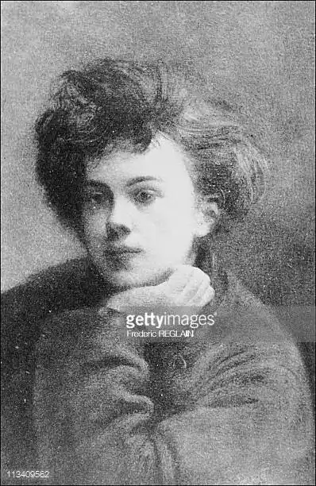

АРТЮР РЕМБО
(1854-1891)
Артюр Рембо народився 1854 року в Шарлевілі й прожив коротке життя — лише тридцять сім років. Однак Рембо-поет помер задовго до офіційної дати своєї смерті: останній з відомих його творів — "Пора у пеклі" — був завершений улітку 1873 року, коли поетові було всього дев'ятнадцять. Тобто ця геніально обдарована людина спромоглася прожити ще майже два десятиріччя, назавжди вилучивши поезію зі свого життя. Шарлевіль — невелике містечко на північному сході Франції. Там Рембо в семирічному віці почав писати прозою, а потім і віршами, там він здобув і шкільну освіту. Вже підлітком Артюр вражав своїх учителів не тільки надзвичайними успіхами в навчанні, а й феноменальною зрілістю розуму. У серпні 1870 року Рембо залишив Шарлевіль, дістався до Парижа, а потім вирушив до Бельгії, де намагався зайнятися журналістикою. За допомогою поліції мати повернула неповнолітнього сина додому. Так відтепер буде завжди, до самої смерті,— ніби націлений до якоїсь таємничої мети, Рембо намагається безперестанку пересуватися, щось шукає. Постійне оновлення стає пафосом його поетичного мислення. У долі цього поета відобразилися переломні моменти сучасної історії Франції. Події Паризької Комуни допомогли бунтареві "вирвати коріння", піти з минулого, із буржуазного Шарлевіля. Перший протест поета був романтичним, романтизм надихав і його лірику. Починав Рембо з учнівської відданості тодішнім авторитетам: В. Гюго, поетам "Парнасу", Ш. Бодлеру — тобто французьким романтикам. Показовим для початку творчості Рембо є великий вірш "Коваль". Усе в ньому нагадує поезію Гюго: історичний сюжет часів Великої французької революції, епічний зміст і епічна форма, республіканська ідея і монументальний стиль. Освоюючи досвід романтизму, Рембо за короткий час ніби повторив у власному творчому шляху етапи розвитку цього літературного напряму. Це відбулося в найпершій фазі творчої біографії поета, яка тривала півтора року — від 2 січня 1870 року, дати опублікування першого вірша Рембо, до травня 1871 року — дати поразки Комуни. Кожний крок поетичного зростання поета був позначений дивним на перший погляд бажанням — позбавитися того, що ним самим уже створено. До осені 1870 року Рембо створив понад десять віршів, у яких найбільш відчутна залежність від романтичної традиції. Майже всі вони написані олександрійським віршем, який втілював усталені норми "правильного" французького віршування. При переході до наступної фази творчості тон і стиль поезії Рембо майже не змінюються. Патетика поступається місцем сарказму — від достойного захоплення минулого поет переходить до недостойного сьогодення. Образи величні й піднесені змінюються образами ницими й карикатурними. Затверджуються жорсткі, різкі, викличні інтонації. Етапи шляху Рембо-поета вимірюються інколи кількома віршами. Так, засвоюючи досвід романтизму, Рембо захопився Бодлером. "Квіти зла" згадуються при читанні його сонета "Венера Анадіомена". Цей сонет уже є новим етапом у розвитку його естетики. Поет ніби викорінює "літературне" уявлення про красу. Втілення кохання — жінка та символ любові — Венера принижуються до карикатурного образу повії. Рембо робить замах і на саме кохання, наближуючись до суцільного невір'я. Улітку 1870 року поет залишає Шарлевіль, що втілював для нього суспільний порядок, релігію, родину. У цей час Рембо вже був довершеним поетом-сатириком, який мав багатий арсенал іронічних, саркастичних, гротескних барв. Франко-прусська війна набирала обертів, і своє шістнадцяти-річчя поет зустрічає віршами про війну. Це, зокрема, сонет "Сплячий у логу". Але, на відміну від традиційних сонетів, для яких вважалися обов'язковими стриманість і суворість у доборі тем і тропів, сонет Рембо характеризується жорстоким, саркастичним тоном, стрімким ритмом, наближеним до розмовного поетичним мовленням, лексичною свободою, використанням "прозаїзмів" і різкими змінами стилю. Це майже гротескне поєднання сонетної форми та "земного" сатиричного сюжету, сповненого анархічного виклику. Всім цим визначенням відповідає і сонет "Моя циганерія" — справжній гімн богемі, людині, яка відірвалась від суспільства й залишилася наодинці з небом і зорями. У вірші "Засідателі" торжествує закладена в "людях-функціях" тенденція до здерев'яніння, закам'янілості. Зникає будь-який натяк на життя і дію. Людину витісняє функція, а потім функцію заміняє її зовнішня оболонка, предметна характеристика. Так створюється сатиричний образ "людини-стільця". До періоду Комуни — нової фази у творчості Рембо — належать лише чотири-п'ять віршів, але це дійсно нова епоха в розвитку поета. Усі ці вірші вражають мудрістю і глибиною, попри те, що Рембо ледве-ледве виповнилося шістнадцять років! Тільки-но він насміхався над бідними, знущався з жінок — і здавалося, що нігілізм поета не знає меж,— а тепер створює справжній гімн жінці-робітниці — "Руки Жанн-Марі" — символ, подібний до "Свободи на барикадах" Делакруа. Раптом зникають цинізм, напускна грубість, Поразка Паризької Комуни, перемога версальців усвідомлюються поетом як найглибша трагедія. Вірші, написані Рембо в дні Комуни, показують, яке значення вона для нього мала. Поразка повстання означала для Рембо перемогу "Засідателів" — "тих, хто сидить". Після загибелі Комуни Рембо всі свої надії покладає лише на мистецтво. Він припиняє навчання, незважаючи на вражаючі успіхи, і взагалі уникає будь-якої постійної діяльності. Це було перш за все демонстрацією бунтівних настроїв поета, тому що він не належав до нероб. Починається новий цикл поневірянь. У серпні 1871 року Рембо надсилає свої вірші Верлену, і той, захопившись ними, запрошує поета до Парижа. Там Рембо зближується з Верленом, з іншими поетами й вдається до способу життя справжньої богеми. У лютому 1872 року Рембо повертається додому, але вже у травні знову їде до Парижа. Потім здійснює кілька поїздок до Бельгії, Англії, знову до Франції і потім повертається в Бельгію. У липні 1873 року Верлен під час чергової запеклої суперечки двох поетів стріляє в Рембо, ранить його, а сам потрапляє у в'язницю. На початку 1874 року Рембо перебуває в Англії, потім у Німеччині, Італії; деякий час живе у Шарлевілі, звідки від'їжджає до Австрії і Голландії. Ця нескінченна "подорож" тягнеться аж до 1880 року, коли поет остаточно залишає Європу. Це десятиріччя злиднів, випадкових заробітків, дивних експериментів. Поет живе, не зв'язуючи себе навіть фактом географічної присутності в одному місці. Тринадцятого травня 1871 року він пише листа, в якому заявляє про свій намір створювати нову поезію: "Я хочу бути поетом, іія намагаюся перетворитися на ясновидця... Йдеться про те, щоб досягти невідомого шляхом розладу всіх почуттів...". Прагнення до "ясновидіння" прямо пов'язується Рембо з бунтом, а "розлад почуттів" протиставляється "нормальному" соціальному буттю. У сонеті "Голосівки" Рембо пропонує новий принцип формування образу, який будується на вільній асоціації між звуком і кольором, зорових враженнях. У "Голосівках" "поет-ясновидець" усе підкоряє своїй свідомості й здатен бачити природу та світобудову позбавленими об'єктивних закономірностей; причинно-наслідкових зв'язків. Як і більшість віршів Рембо, "Голосівки" мають безліч трактувань. Наприклад, одне з них пропонує розглядати вірш як символічну картину людського буття: від темряви (чорний колір А) до світла (білий колір Е), через бурхливі пристрасті й (червоний колір І) до мудрості (зелений колір У) і пізнання таємниці Всесвіту (синій колір О). Важливу роль у "Голосівках" відіграє Принцип контрастності: чорне — біле, смерть — життя; потворне — прекрасне, швидкоплинне — випадкове. Рембо використовує форму сонета, який традиційно складається з тези, антитези та їх синтезу, тобто в самій його будові закладене протиріччя, і це дозволяє розглядати "Голосівки" як зразок символістського пошуку "відповідностей" між різними началами життя, як панорамну картину Всесвіту. Уподібнення голосного звука кольору означало нехтування словом як смисловою одиницею, як носієм певного значення. Звук, ізольований від смислового контексту, набуває функцію "навіювання", прямого впливу на почуття, "сугестивності", за допомогою чого й виявляється "невідоме". Таку літературну техніку провіщав уже принцип Верлена "музика понад усе" (який, безсумнівно, прямо вплинув на Рембо), але верленівський імпресіонізм зберігав як образ даної душі, так і конкретний природний образ, а у Рембо непізнаванним стає все просте й відчутне. У період "ясновидіння" Рембо по-справжньому вводить вірш "П'яний корабель", створений влітку 1871 року. "П'яний корабель" — розповідь про ту мандрівку, яку має намір здійснити поет-"ясновидець". Якийсь корабель, що починає плавання неспокійним морем, швидко втрачає і екіпаж, і кермо, і врешті-решт готовий піти на дно. Утім, Корабель цей "олюднюється", перетворюється на символ, наочне, зриме втілення "я" поетам стану його душі: "Підгривоюзатокя — корабель пропащий, — / Закинутий у вись етерну без птахів, / Звідкіль ні монітор, ні парусник найкращий / Не вирвуть остова, що від води сп'янів..." У вірші виникає подвійний образ "корабля-людини", подвійної долі — і розбитого корабля, і розбитого серця поета. Рембо не лише малює у вигляді "п'яного корабля" свою мандрівку за "невідомим". Він передбачає і швидку загибель корабля, що розпочав небезпечний шлях, і свою поетичну долю. "П'яний корабель" — це також своєрідний міф про світ, поетова сповідь в образі "маленької одіссеї", подорожі в пошуках самого себе. Поет ототожнює себе з кораблем, який, втративши команду, "позбувшись свого вантажу", у захваті віддається стихії. І в зовнішньому, оповідному плані "П'яного корабля", і у прихованому ліричному переплітаються протилежні почуття: завзятість і тривога, захоплення безмежною волею і страх загубитися назавжди. Образи поезії втрачають чіткість, деформуються, і важко визначити межу між реальним і уявним. "Підстановка", яка відбулася в "П'яному кораблі", ознаменувала формування нової поетичної системи, заснованої на символічному відображенні дійсності. Слідом за "П'яним кораблем" з'явилася низка поезій, написаних улітку 1872 року під час поневірянь поета.